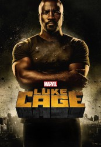

")
Alternativ: Luke Cage
 
 IMDB-Wertung: 7.9 / 10
IMDB-Wertung: 7.9 / 10  Metascore:
Metascore: 
Ex-Häftling Luke Cage hat übermenschliche Muskelkraft und eine nahezu unzerstörbare Hautoberfläche. Er versucht in Harlem unterzutauche, doch sein Traum von einem gewöhnlichen Leben zerplatzt, als er es mit dem Ex-Häftling Shades und dem kriminellen Nachtclub-Besitzer Cottonmouth zu tun bekommt. Dessen Cousine Maria Dillard hat sich als aufstrebende Politikerin eigentlich vorgenommen, ihren Heimat-Stadtteil Harlem gründlich auf Vordermann zu bringen, würde ihr da nicht ihr zwielichtiger Cousin immer wieder kräftig dazwischenfunken.
Jahr: 2016
Dauer: 55 Minuten
FSK:
Land: USA Studio: NetflixTonspuren:
Untertitel:
Auflösung: 720p (1280x720) Größe: 37376 MB
Genre: Action, Thriller, Drama, Sci-Fi, Krimi, TV-Serie
Regisseur: Paul McGuigan, Phil Abraham, Andy Goddard, Marc Jobst, Clark Johnson, Magnus Martens, Sam Miller, Vincenzo Natali, Guillermo Navarro, Tom Shankland, Stephen Surjik, George Tillman Jr.
Drehbuch: Preston Lacy
Soundtrack:
Darsteller:
 Mike Colter als Luke Cage
Mike Colter als Luke Cage Theo Rossi als Hernan 'Shades' Alvarez
Theo Rossi als Hernan 'Shades' Alvarez Rosario Dawson als Claire Temple
Rosario Dawson als Claire Temple Ron Cephas Jones als Bobby Fish
Ron Cephas Jones als Bobby Fish Erik LaRay Harvey als Willis 'Diamondback' Stryker
Erik LaRay Harvey als Willis 'Diamondback' Stryker Karen Pittman als Inspector Priscilla Ridley
Karen Pittman als Inspector Priscilla Ridley Mahershala Ali als Cornell 'Cottonmouth' Stokes
Mahershala Ali als Cornell 'Cottonmouth' Stokes Frank Whaley als Detective Rafael Scarfe
Frank Whaley als Detective Rafael Scarfe Jacob Vargas als Domingo Colon
Jacob Vargas als Domingo Colon Michael Kostroff als Dr. Noah Burstein
Michael Kostroff als Dr. Noah Burstein Manny Perez als Lieutenant Perez
Manny Perez als Lieutenant Perez R. Marcos Taylor als Amos
R. Marcos Taylor als Amos Frankie Faison als Henry 'Pop' Hunter
Frankie Faison als Henry 'Pop' HunterDatei: X:\Comic-Serien\Marvel's Luke Cage\Marvels Luke Cage S01\Marvels Luke Cage S01E01 Moment of Truth.mkv seit 11.10.2016
Festplatte: Comicverfilmungen+MusikCD
 Es gibt insgesamt 34 Filme in der Gruppe 'Comic-Serien'
Es gibt insgesamt 34 Filme in der Gruppe 'Comic-Serien'